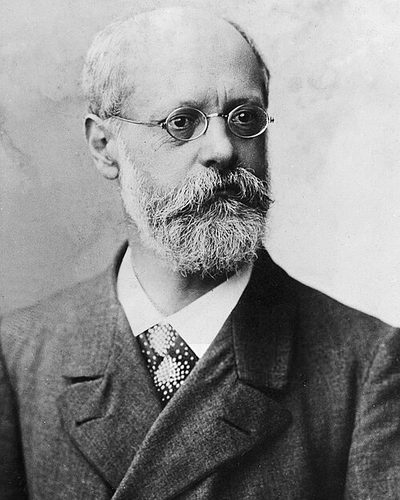

Ideologies / Radical Left
What is Orthodox Marxism (Kautskyism)?
Orthodox Marxism (Kautskyism) is a political ideology in the Radical Left family. The Class Struggle is Kautsky's commentary on the Erfurt Programme. It argues that capitalist development itself concentrates industry and enlarges the working class until social ownership of the means of production becomes necessary. The task of the party is to organise that class, win reforms and a majority through elections and parliament, and take political power when conditions are ripe. The Road to Power adds that the party must stay independent of bourgeois governments, and that a revolution cannot be produced at will or ahead of its time.
A revolutionary party, but not a party that makes revolutions.
Defined from: Karl Kautsky, The Class Struggle (1892) and The Road to Power (1909)
See how close you are to Orthodox Marxism (Kautskyism) Dare a friend to answer as one


Where Orthodox Marxism (Kautskyism) stands on 13 axes
Each axis runs from 0 to 100. A score of 50 is the middle. On a classic compass it sits in the Libertarian Left quadrant.
| Axis | Position | Score | In words |
|---|---|---|---|
| EconomyMarket to Planned | 85 | Very strongly Planned | |
| OwnershipPrivate to Collective | 95 | Very strongly Collective | |
| RightsLiberty to Security | 30 | Strongly Liberty | |
| GovernmentDemocracy to Autocracy | 10 | Very strongly Democracy | |
| StructureDecentralised to Centralised | 70 | Strongly Centralised | |
| NationInternationalist to Nationalist | 10 | Very strongly Internationalist | |
| ImmigrationMulticulturalist to Assimilationist | 30 | Strongly Multiculturalist | |
| ValuesProgressive to Traditional | 25 | Strongly Progressive | |
| TechnologyAccelerationist to Precautionary | 10 | Very strongly Accelerationist | |
| EnvironmentIndustrialist to Environmentalist | 20 | Strongly Industrialist | |
| ReligionSecular to Religious | 5 | Very strongly Secular | |
| MilitaryPacifist to Militarist | 30 | Strongly Pacifist | |
| TradeFree Trade to Protectionist | 35 | Leans Free Trade |
Ideologies closest to Orthodox Marxism (Kautskyism)
- De Leonism92% alike
- Left Accelerationism88% alike
- Luxemburgism86% alike
- Eurocommunism85% alike
- Democratic Socialism84% alike
Its opposite on this map is Kokutai Thought, at 24%.
Parties near Orthodox Marxism (Kautskyism)
Social Democratic Party of 1891 (Germany) was the first party or movement to carry it, placed here from The Erfurt Programme (1891).
- Russian Social Democratic Labour Party of 1903Russia. Programme of the Russian Social Democratic Labour Party (1903)86% alike
- Social Democratic Party of 1891Germany. The Erfurt Programme (1891)86% alike
- Communist LeagueEurope. Manifesto of the Communist Party (1848)85% alike
- Socialist Party of AmericaUnited States. Socialist Party Platform (1912)85% alike
Common questions
What is Orthodox Marxism (Kautskyism)?
Orthodox Marxism (Kautskyism) is a political ideology in the Radical Left family. The Class Struggle is Kautsky's commentary on the Erfurt Programme. It argues that capitalist development itself concentrates industry and enlarges the working class until social ownership of the means of production becomes necessary. The task of the party is to organise that class, win reforms and a majority through elections and parliament, and take political power when conditions are ripe. The Road to Power adds that the party must stay independent of bourgeois governments, and that a revolution cannot be produced at will or ahead of its time.
What does Orthodox Marxism (Kautskyism) believe?
In one line: A revolutionary party, but not a party that makes revolutions. Its strongest positions are Collective, Secular, Democracy. The Class Struggle is Kautsky's commentary on the Erfurt Programme. It argues that capitalist development itself concentrates industry and enlarges the working class until social ownership of the means of production becomes necessary. The task of the party is to organise that class, win reforms and a majority through elections and parliament, and take political power when conditions are ripe. The Road to Power adds that the party must stay independent of bourgeois governments, and that a revolution cannot be produced at will or ahead of its time.
Who founded Orthodox Marxism (Kautskyism)?
Orthodox Marxism (Kautskyism) is defined here from The Class Struggle (1892) and The Road to Power (1909) by Karl Kautsky. The thinker most tied to it is Karl Kautsky (1854 to 1938).
Is Orthodox Marxism (Kautskyism) left wing or right wing?
On a classic two axis compass Orthodox Marxism (Kautskyism) falls in the Libertarian Left quadrant, which means the economic left and the libertarian side. Left and right hide a lot, though, which is why EthosScales scores it on thirteen separate axes.
How is Orthodox Marxism (Kautskyism) different from De Leonism?
They are close: 92% alike. The biggest gaps are on Structure, where Orthodox Marxism (Kautskyism) scores 70 and De Leonism scores 50, and Military, where Orthodox Marxism (Kautskyism) scores 30 and De Leonism scores 20. On each axis, 0 is one end and 100 is the other.
Think this is wrong? Suggest a correction. The scores are editorial estimates.